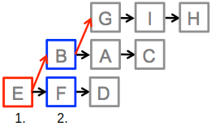

Ratkaisu
Oheisessa kuvassa on esitetty esimerkkinä aiemmin pidettyjen 3 kilpailun tulokset (ne voivat poiketa tehtävässä sinulle esitetyistä, mutta ratkaisuperiaate on sama!). Kuvaan on lisätty nuolet merkitsemään hevosten nopeusjärjestystä: nuolet kulkevat nopeammista hitaampiin hevosiin.
Kuvaan ei ole erikseen piirretty esimerkiksi nuolta B → C, mutta niiden järjestys voidaan päätellä nuoliketjusta B → A → C.
Ensimmäinen kilpailu: selvitetään nopein hevonen
Nopeimman hevosen on oltava jokin aiempien kolmen kilpailun voittajista eli oheisen kuvan perusteella hevosista B, E ja G. Järjestämme näiden hevosten välisen kilpailun ja asetamme kilpailun voittajan palkintopallin sijalle 1: kyseessä on kaikkein nopein hevonen.

Toinen kilpailu: selvitetään toiseksi nopein hevonen
Edellä järjestämämme kilpailun tuoma lisätieto on kuvattu ohessa punaisilla nuolilla E → B ja B → G.
Toiseksi nopeimman hevosen on tässä tilanteessa oltava toinen sinisellä korostetuista hevosista B ja F, jotka ovat saavuttaneet toisen sijan kilpaillessaan nopeinta hevosta vastaan. Järjestämme siis kilpailun, johon nämä kaksi hevosta osallistuvat. Kolmas hevonen voidaan valita vapaasti. Kilpailun voittanut hevonen on toiseksi nopein ja voidaan asettaa palkintopallin sijalle 2.
Kolmas kilpailu: selvitetään kolmanneksi nopein hevonen
Edellä järjestämämme toinen kilpailu tuotti taas lisää tietoa, joka on kuvattu ohessa: mukana on nyt punainen nuoli F → B.
Kolmanneksi nopeimman hevosen on oltava toinen sinisellä korostetuista hevosista B ja D, jotka ovat tulleet toistaiseksi järjestetyissä kilpailuissa toiseksi nopeimman hevosen jälkeiselle sijalle. Järjestämme siis kilpailun, johon nämä kaksi hevosta B ja D osallistuvat. Kolmas hevonen voidaan taas valita vapaasti. Kilpailun voittanut hevonen on kolmanneksi nopein ja voidaan asettaa palkintopallin sijalle 3.
Vaihtoehtoisia skenaarioita kolmanteen kilpailuun
Tutkitaan seuraavaksi tilannetta, jossa toisen järjestämämme kilpailun tulos olisikin ollut B → F → H eikä F → B → H. Tällöin B olisi tullut palkintopallin sijalle 2, ja kolmas kilpailu olisi järjestetty aiemmissa kilpailuissa välittömästi B:n jälkeisen sijan saavuttaneiden hevosten A, G ja F kesken. Oheinen kuva havainnollistaa tätä tilannetta.
Käsitellään viimeisenä vielä tilannetta, jossa olisimmekin valinneet toiseen kilpailuun hevoset B, F ja D eikä B, F ja H kuten edellä oli tehty. Tällöin kilpailun tulos olisi ollut F → B → D ja olisimme suoraan tienneet hevosen B olevan kolmanneksi nopein tarvitsematta järjestää kolmatta kilpailua.
Tämä on tietojenkäsittelyä!
Jonkin alkiojoukon (tässä hevosten) alkioiden välisen järjestyksen määrittäminen, ns. lajittelu, on yksi perustavanlaatuisimpia ja yleisimpiä tietojenkäsittelyn ongelmia. Ongelmasta on monia variantteja. Esimerkiksi joissain tapauksissa (kuten tässä tehtävässä) riittää määrittää vain osa järjestyksestä (tällöin voidaan puhua osittaisesta lajittelusta tai yksittäisten alkioiden kohdalla järjestyksessä k:nnen alkion hausta).
Eräs tietojenkäsittelytieteen keskeinen teoreettinen tutkimustulos koskee sitä, mikä on pienin mahdollinen määrä alkioiden välisiä vertailuita, joka riittää minkä tahansa alkiojoukon lajitteluun. Tehtävän tavoite muistuttaa tätä asetelmaa, joskin tehtävän hevoskilpailut määrittivät kerralla kolmen alkion (hevosen) välisen järjestyksen, kun tavallisesti yksi alkioiden välinen vertailu vertaa kahta alkiota toisiinsa. Yksi kolmen hevosen A, B ja C välinen kilpailu tuotti saman informaation kuin kolme erillistä parien (A, B), (A, C) ja (B, C) välistä vertailua.
Tehtävän esimerkkiratkaisuissa hyödynnettiin suunnattua graafia esittämään hevosten välisestä nopeusjärjestyksestä toistaiseksi saatua tietoa. Graafit ovat yksi tietojenkäsittelytieteen tärkeimmistä apuvälineistä ja koostuvat solmuista (tässä hevosista) sekä niiden välisistä yhteyksistä (kaarista; tässä tehtävässä nuolista). Silloin kun tämän tapaisessa graafissa tarkastellaan solmujen (tässä hevosten) järjestystä, puhutaan tietojenkäsittelytieteessä usein topologisesta lajittelusta.
Katso lisää esim. https://fi.wikipedia.org/wiki/Lajittelualgoritmi, https://fi.wikipedia.org/wiki/Graafi ja https://fi.wikipedia.org/wiki/Topologinen_lajittelu.